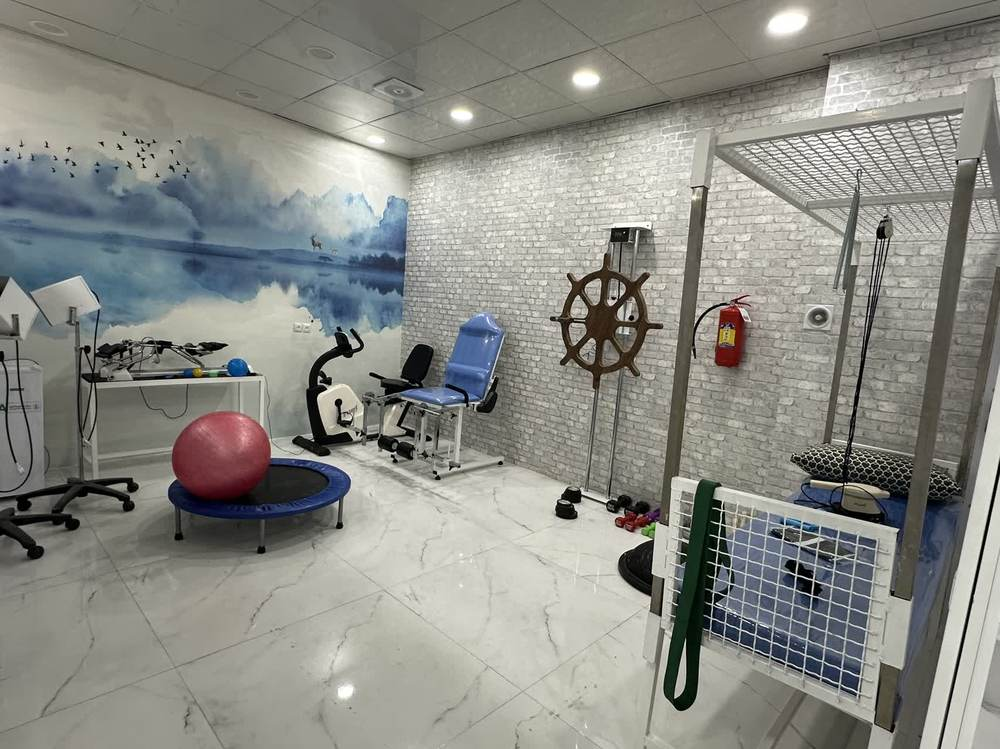

فیزیوتراپی ساوه — دیسک کمر، سیاتیک، زانو و گردن
در کلینیک ابنسینا اول علت درد را پیدا میکنیم، بعد درمان را شروع میکنیم. کمردرد، سیاتیک، زانو و گردن را با دستورزی و تمرین هدفمند کار میکنیم. اگر بعد از جراحی یا آسیب ورزشی آمدهاید، مسیر بازتوانی را هم قدمبهقدم پیش میبریم.

رویکرد درمان
درمان از یک ارزیابی حرکتی شروع میشود؛ نه از دستگاه و نه از حدس. الگوی درد، محدودیت حرکت و کار روزمرهتان را میبینیم و روی همان پایه برنامه مینویسیم. شاکویو یا لیزر اگر لازم باشد استفاده میشود، اما جای معاینه و تصمیم بالینی را نمیگیرد.
ترکیب کار ما دستورزی، تمریندرمانی و در صورت نیاز درای نیدلینگ است. هر جلسه را با پاسخ بدن شما تنظیم میکنیم. پوشش معمول: کمردرد و دیسک، سیاتیک، گردن، زانو، شانه، آسیب ورزشی و بازتوانی بعد از جراحی. برای بیماران سکته و سالمندان هم برنامه جدا نوشته میشود.
خدمات
از ستون فقرات تا زانو و شانه، خدمات فیزیوتراپی این کلینیک بعد از معاینه و متناسب با وضعیت شما انتخاب میشود. بازتوانی پس از جراحی و آسیب ورزشی هم در همین مجموعه انجام میشود.
ستون فقرات و دیسک
مفاصل و اندام
تکنیکهای تخصصی
بازتوانی و گروههای خاص
سوالات متداول
قبل از رزرو نوبت، این پرسشها زیاد تکرار میشوند.
چند جلسه لازم است؟
به نوع مشکل و شدت علائم بستگی دارد. بعد از جلسه اول یک برآورد میدهیم. بسیاری از دردهای مکانیکی کمر و گردن حدود ۸ تا ۱۲ جلسه پاسخ میدهند، اما عدد برای همه یکی نیست.
آیا فیزیوتراپی دردناک است؟
نباید درد شدید ایجاد کند. گاهی کشش یا ناراحتی خفیف طبیعی است. اگر درد تند شد، شدت را کم میکنیم. بازخورد شما در هر جلسه برای تنظیم درمان مهم است.
فرق فیزیوتراپی با ماساژ چیست؟
ماساژ بیشتر برای شل کردن عضله است. فیزیوتراپی از معاینه شروع میشود و علت را هدف میگیرد؛ با دستورزی، تمرین و اصلاح حرکت. هدف فقط آرام شدن موقتی نیست، برگشتن به کار روزمره است.
برای دیسک کمر و سیاتیک کافی است؟
در بیشتر موارد بله؛ بسیاری بدون جراحی بهتر میشوند. اگر ضعف پیشرونده، بیحسی شدید یا اختلال کنترل ادرار باشد، ارجاع پزشکی میدهیم. تصمیم بعد از معاینه اول مشخص میشود.
بعد از جراحی هم لازم است؟
معمولاً بله. بازتوانی کمک میکند ایمنتر به فعالیت برگردید و از خشکی و ضعف بعد از عمل کم شود. برنامه بر اساس نوع جراحی و مرحله ترمیم تنظیم میشود.
تمرین خانگی هم داده میشود؟
بله. چند حرکت مشخص برای خانه آموزش داده میشود تا اثر جلسات حفظ شود. تعداد و شدت را با پیشرفت شما عوض میکنیم.
درای نیدلینگ چه کمکی میکند؟
برای نقاط سفت و ماشهای عضله بهکار میرود و میتواند اسپاسم و درد موضعی را کم کند. معمولاً کنار دستورزی و تمرین استفاده میشود، نه بهتنهایی.
تمریندرمانی با ورزش باشگاه چه فرقی دارد؟
اینجا هر حرکت بعد از معاینه و برای مشکل مشخص شما انتخاب میشود. هدف تقویت نقطه ضعف، کم کردن فشار از مفصل آسیبدیده و اصلاح الگوی حرکت است؛ نه برنامه عمومی بدنسازی.
چطور نوبت بگیرم؟
با تلفن ثابت ۰۸۶۴۲۲۳۰۳۰۰ یا موبایل و واتساپ ۰۹۰۱۵۵۵۵۷۲۱. ساعات: شنبه تا چهارشنبه صبح ۱۰–۱۳ و عصر ۱۶–۲۰؛ پنجشنبه صبح ۱۰–۱۳. در پیام نام و مشکل کوتاه را بنویسید. اگر وضعیت اورژانسی است به مراکز اورژانس مراجعه کنید.
نظر مراجعان
نمونهای از بازخورد مراجعان. برای دیدن نظرات بیشتر میتوانید صفحه کلینیک در گوگل مپ را هم ببینید.